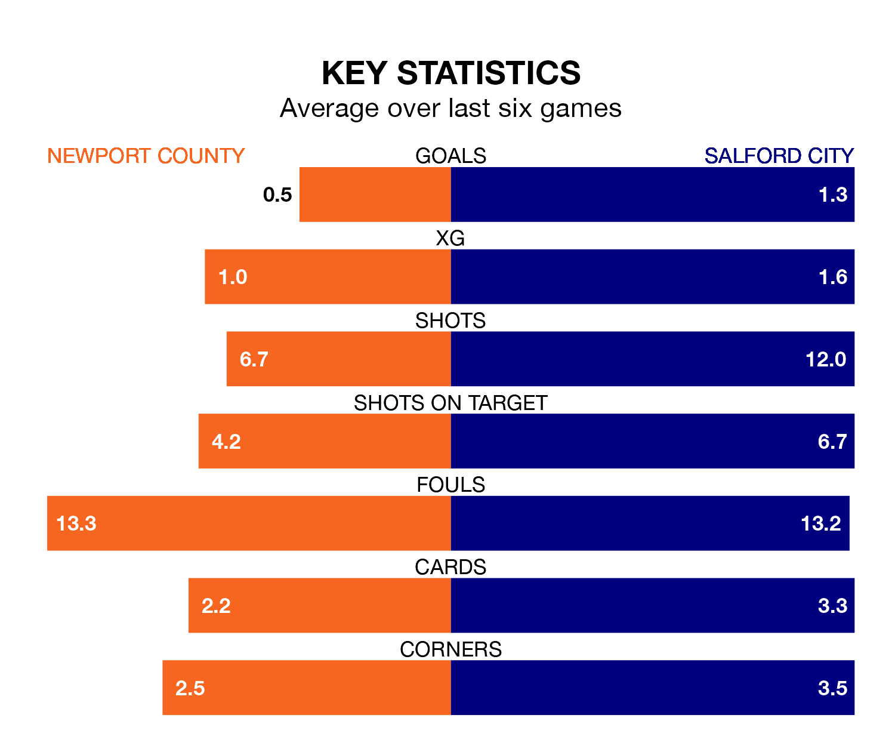

Newport County welcome Salford City to Rodney Parade on Saturday looking to pick up points to end their six-game losing streak.
Newport's struggles have left them with no points from their last six EFL League Two matches, while their opponents have earned six from a possible 18.
In Matt Smith, Salford have one of the league's most on-form strikers so far this season. He has notched 23 goals in 44 appearances, to sit second in the scoring charts.
His goal rate of one every 150 minutes is quicker than that of Will Evans, Newport's top scorer with a goal every 174 minutes, and a total of 21 goals in 44 games.
In the last 10 years, Newport and Salford have played each other on 10 occasions. Newport won one of them, Salford six, and they drew three times.
On average, the Exiles scored 0.9 goals and the Ammies 1.6 in those matches.
Their last meeting was on September 30, when Salford won 2-1 at home.
City are 20th in the table after 44 games, of which they have won 12 and drawn 11, earning 47 points.
County are four places ahead of the Ammies in 16th, with 16 wins and seven draws putting them on 55 points.
With 61 goals in 44 games so far this season, the Exiles are scoring at below the league average rate with 1.4 goals per game. And they are conceding more than average, letting in 71 goals at a rate of 1.6 per game.
The visitors are also below average scorers, with 1.4 goals per game, compared to a league average of 1.5. They have conceded 1.8 goals per game.
Newport's last match was on April 13, a 2-1 loss against Tranmere Rovers, with Will Evans getting the goal for the Exiles.
Salford lost 2-1 against Bradford City last time out, also on April 13, with Callum Hendry on the scoresheet.
Updated: 15:40 (UTC), 18/04/24